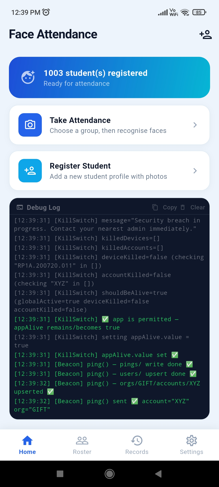
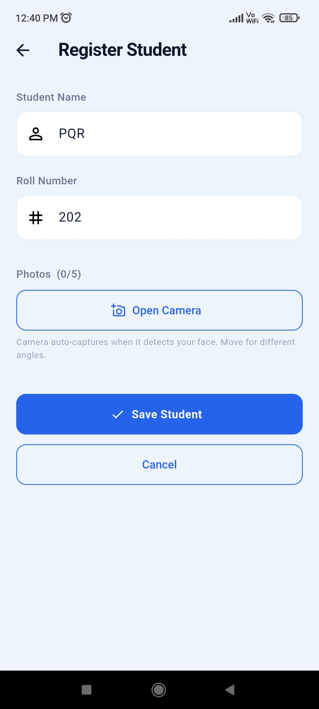
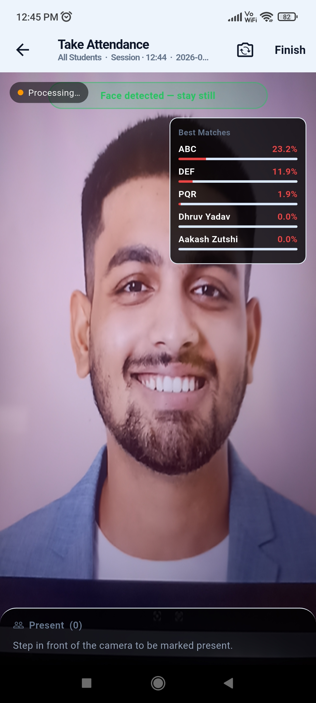
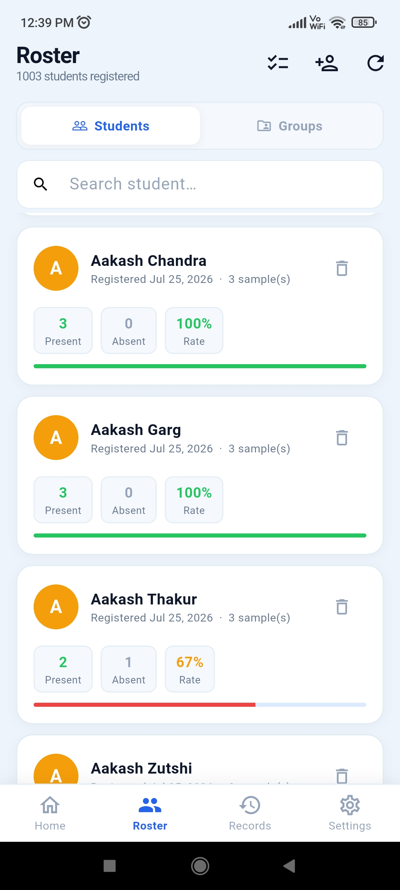

AI Face Recognition
Recognises enrolled students from a live camera feed and marks attendance automatically.
Offline · On-device · Built for schools
SenTree marks attendance with on-device AI face recognition, right inside the classroom. No internet dependency, no queues, no proxy attendance — just a camera and a second.
*Typical on-device recognition time; varies by hardware.

Designed for institutions that take attendance — and student privacy — seriously.
Product overview
SenTree pairs an Android application used in the classroom with a web dashboard used by administrators — working together, or independently, without depending on an internet connection to function.
Installed on a classroom tablet or phone. A teacher opens a group, points the camera, and SenTree recognises each enrolled student in real time — entirely on-device.
Used by admins and teachers to manage students, groups, and records — and to review attendance history, exports, and audit trails from any browser.
Features
Built for the realities of a real school day — spotty connectivity, shared devices, and staff who need things to just work.
Recognises enrolled students from a live camera feed and marks attendance automatically.
Runs entirely on-device, so attendance works even without an internet connection.
Guards against photo and video spoofing attempts to keep attendance records genuine.
Enroll, edit, and organise student profiles with photos used for recognition.
Organise students into classes or sections for faster, structured attendance sessions.
Every session is logged with timestamps, ready to review by student, group, or date.
Export attendance data to Excel in a few clicks for reporting and record-keeping.
Back up student and attendance data locally in a portable, structured format.
A browser-based control centre for administrators to manage the whole institution.
Optionally sync device data to the dashboard once a connection becomes available.
Attendance taken offline is queued locally and synced automatically once online.
Every administrative action is recorded, so changes to records stay traceable.
Teachers get scoped access to take attendance for their own groups only.
Full administrative oversight of users, permissions, groups, and system settings.
Administrators can remotely disable a device's access if it is lost or misused.
Recover student and attendance data from a backup when a device is reset or replaced.
The dashboard reflects newly synced attendance as soon as it's available.
See it in action
A short walkthrough of enrollment, live recognition, and the dashboard.
Gallery
A closer look at enrollment, live recognition, group views, and reporting.




How it works
Your institution's admin account is verified and approved to get started.
Students are enrolled once with a photo, so the app can recognise them going forward.
Students are organised into classes, sections, or batches for structured sessions.
Teachers open a group and let the camera recognise each student — offline, instantly.
Attendance is compiled automatically, ready to export or review whenever needed.
Admins get a full, synced view across every group, class, and device.
FAQ
No. Face recognition and attendance marking run entirely on-device. An internet connection is only used, optionally, to sync data to the web dashboard.
Data is stored locally on the device by default, with JSON backups and optional synchronisation to your institution's dashboard when connected.
SenTree includes anti-spoof detection designed to identify photo and video-based spoofing attempts during recognition.
The SenTree app runs on Android tablets and phones. The dashboard is web-based and works in any modern browser.
Yes. Role-based access means teachers see only their assigned groups, while admins have full oversight and control.
Reach out through the contact section below with your institution's details, and we'll walk you through setup and onboarding.
Get in touch
Tell us a little about your school or institute. We'll get back to you with a walkthrough and next steps — no commitment required.